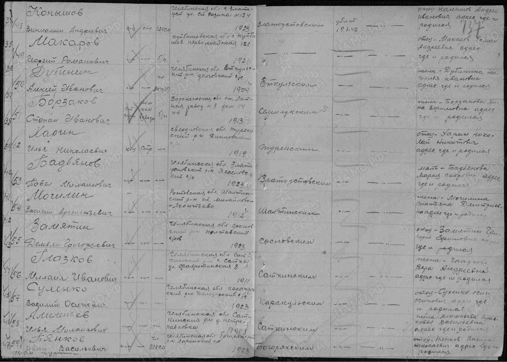

DNA-Spurensuche
РешеноСухенко
Прабабушка была известна в семье под фамилией по мужу: Нелина. ДНК-совпадение с уральской веткой родственников показало: настоящая фамилия: Сухенко.

Хутор Кугоевский на реке Куго-Ея, место, рядом с которым появился хутор Тимашевка, основанный переселенцами из Роменского уезда с Томашевки. На карте конца XIX века.
- Исходные данные до начала поисков
Прабабушка по отцовской линии: Матрёна (Матрона) Иосифовна, известная в семье под фамилией по мужу, Нелина, предположительно 1887 года рождения. Переселенка с Украины на Кубань.
Архивных данных о месте исхода не сохранилось: запрошенные документы 1850–1942 годов в Краснодарском архиве (Крыловской район) результата не дали, не из чего было брать информацию.
Была гипотеза, что «Нелина»: фамилия по первому браку (муж, вероятно, умер), а настоящая девичья фамилия прабабушки: Сухенко.
- Метод поиска
Автосомное ДНК-тестирование с построением отдельного дерева «Томашевка, Роменский уезд» на MyHeritage, для сведения воедино всех найденных носителей фамилии Сухенко.
Работа велась одновременно по двум направлениям: поиск ветви, переселившейся с Томашевки на Урал (потомки Филиппа Зиновьевича и Андрея Никитича Сухенко), и работа с местным генеалогом на месте: запрос похозяйственных ведомостей для восстановления состава семей.
Ключевую роль сыграло совпадение отчеств: у уральских Сухенко отец, Осип (Иосиф), а среди его детей: Яков и Илья Осипович, что указывало на возможное родство с прабабушкой Матрёной Иосифовной.
- Тип ДНК-тестов
- Автосомный ДНК-тест MyHeritage.
- Время до результата
- Активная фаза сопоставления: с декабря 2025 по июль 2026, около семи месяцев. Итоговое подтверждение обеих находок (места исхода и девичьей фамилии) получено к июлю 2026.
- Количество тестов
- Точное число тестов в переписке не зафиксировано: решающую роль сыграло не количество тестов, а сопоставление одного целевого ДНК-совпадения (уральская ветвь потомков Сухенко) с архивными подворными книгами на месте.
- Результат
Установлено место исхода: посёлок Хоружевка, около 14 км от местечка Томашевка, Роменский уезд, Полтавской губернии.
Через ДНК-совпадение с уральской веткой потомков Сухенко подтверждена гипотеза о девичьей фамилии: прабабушка Матрёна Иосифовна действительно урождённая Сухенко, а Нелина: фамилия по первому браку.
Все найденные представители рода Сухенко опубликованы на странице автора на Familio.

Архивный документ (ЦАМО): красноармеец Василий Осипович Сухенко, 1923 года рождения, Каракульский район Челябинской области, брат Матрёны Иосифовны (Сухенко, по первому браку Нелиной, по второму: Троян). В графе отца указан Сухенко Осип Осипович.
Источник: собственные сообщения автора в тематических группах Familio по генеалогии и ДНК, 2022–2026.